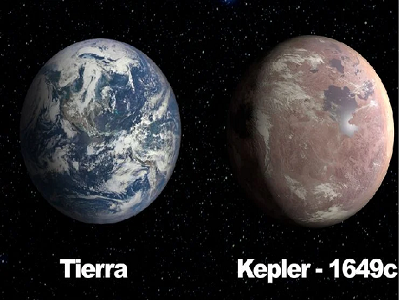

Descubren un nuevo planeta en zona habitable
Bautizado con el nombre de Kepler-1649c tendría características una segunda Tierra. Es el primer planeta de tamaño similar a nuestro mundo,
que se descubre orbitando en zona habitable alrededor de una estrella, dentro de nuestra galaxia o Vía Láctea.
¿A qué distancia está de nosotros? ¿Podría existir algún tipo de vida? Descubrí estas
respuestas y más en el artículo que publicamos.
Ver más
Avanza el desarrollo de vacunas contra el coronavirus
Los investigadores de diversos paises continúan trabajando para desarrollar vacunas que combatan el covid-19.
Varios ensayos preliminares han comenzado a mostrar resultados positivos.
Estos son los hechos más recientes en la carrera por lograr una vacuna que frenaría la pandemia.
Ver más
¿Quién descubrió el número Pi? ¿Qué significa?
Seguro que si te preguntan por el número Pi, rápidamente recitarás lo que aprendiste en la escuela:
que equivale a 3,14159… Quizá también recuerdes que se utilizaba para resolver determinados problemas
de geometría, pero en general, poco más. En la nota hemos querido acercarnos a este prodigio de las
matemáticas para averiguar Quién descubrió el número Pi y Qué es Pi en Matemáticas.
Ver más
¿Es la fusión nuclear la energía del futuro?
La tecnología para la fusión nuclear surgió alrededor de los años 50.
Desde 2006 la Unión Europea y otros seis países (China, Corea, Japón, India, Estados Unidos y
Rusia) se unieron para realizar el mayor reactor Tokamak del mundo, actualmente en construcción en Francia,
con el fin de demostrar el potencial de este tipo de energía para su comercialización. Todavía exiten dudas
sobre la utilización de esta fuente de energía que en teoría resulta inagotable.
Ver más